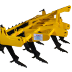
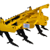
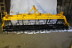
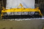
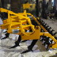
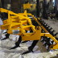
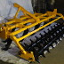
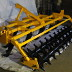

ЧИЗЕЛЬ
 

 

 

 

ПРИЗНАЧЕННЯ
Глибокорозпушувачі причипні призначаються для основного безвідвального обробітку на глибину до 50 см в усіх грунтово-кліматичних зонах України, крім грунтових масивів з кам’янистими включеннями.
ТЕХНІЧНІ ХАРАКТЕРИСТИКИ
| Марка машини | ЧН-1,5 | ЧН-2,5 | ЧН-3,5 | ЧН-4,5 |
| Продуктивність, га/год | до 1,2 | до 2,0 | до 2,8 | до 3,6 |
| Робоча ширина захвату, м | 1,5 | 2,5 | 3,5 | 4,5 |
| Глибина обробітку,см | до 50 | до 50 | до 50 | до 50 |
| Число робочих органів, шт | 3 | 5 | 7 | 9 |
| Глибина обробітку котками, см | до 15 | до 15 | до 15 | до 15 |
| Необхідна потужність трактора, к.с. | 80-120 | 120-180 | 160-220 | 250-340 |
| Маса, кг | 750 | 1200 | 1700 | 2300 |